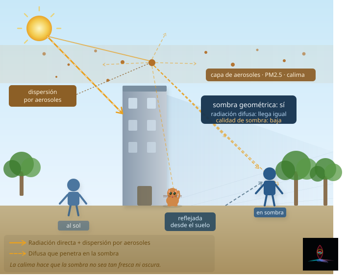

Cómo se calcula
Nadie tiene un sensor en cada esquina de Sevilla. Tampoco en Bilbao, ni en Berlín, ni en ninguna ciudad del mundo. Lo que sí hay son datos públicos, y de dos clases. Por un lado, los satélites y las estaciones oficiales, que miran el aire a lo grande y por zonas enteras. Por otro, información muy detallada de cada calle, de si pasa mucho tráfico o es tranquila, de si tiene árboles, de si está encajada entre edificios altos o abierta a una plaza. Manolit∞ Aire junta las dos cosas y con ellas estima, calle por calle, cómo está el aire realmente. Para hacerlo usa un método conocido en epidemiología ambiental que se llama regresión por uso del suelo.
La sombra y la radiación difusa
La sombra corta el sol directo, pero no elimina toda la radiación. En los días de contaminación alta, con polvo del Sahara, smog o inversión térmica, las partículas que flotan en el aire reparten la luz del sol en todas las direcciones, también hacia abajo, dentro de las zonas sombreadas. Por eso puedes estar debajo de un árbol o de un toldo y seguir acalorándote. De esto va precisamente el índice de calidad de sombra de Manolit∞ Aire. No se queda en decirte si hay sombra, sino en cuánto vale esa sombra ahora mismo y en ese sitio concreto.

Los parámetros del modelo
El modelo necesita sopesar cuánto influye la contaminación de la calle en la radiación difusa que se cuela dentro de la sombra, y para eso usa un coeficiente. Ese coeficiente no vale lo mismo en todas partes. En una ciudad del sur, donde el aire sube con fuerza y hay episodios de calima, la suciedad que hay a ras de suelo se mezcla bien con toda la columna de aire y el efecto se nota más. En el norte atlántico, en cambio, el viento y la lluvia frecuente limpian el aire enseguida, y lo que manda en la luz difusa son las nubes, no el polvo.
El modelo tiene esto en cuenta y ajusta el coeficiente solito según la zona climática del punto que consultes, que se determina con la clasificación Köppen-Geiger. Conviene decirlo claro. Esos valores los hemos elegido a mano, razonando lo que ocurre en cada clima, y son criterios físicos defendibles, no medidas sacadas de un laboratorio. Tiene sentido que un desierto seco puntúe más alto que una costa lluviosa, y así lo hemos planteado, pero nadie pretende que sean cifras exactas. Cada valor está documentado, con su justificación completa, en el repositorio del proyecto. Ahí está todo, sin cajas negras.
Qué significa cada dato
Junto al índice de calidad de sombra verás en el mapa tres valores. Te contamos qué mide cada uno y para qué lo calculamos.
AOD, o espesor óptico de aerosoles. Dice cuánta luz del sol se queda retenida en el polvo y las partículas que flotan en el aire, contado desde el suelo hasta lo alto de la atmósfera. Lo calculamos porque cuando hay calima o smog ese polvo reparte la radiación en todas direcciones y hace que una sombra caliente más de lo que debería. Para orientarte, por debajo de 0,2 el cielo está limpio, entre 0,2 y 0,4 hay polvo moderado y a partir de 0,4 estamos ante una calima de verdad.
PM2.5, las partículas finas de menos de 2,5 micras. Miden la contaminación que hay justo donde respiras, en la calle. Son las partículas más pequeñas y las más dañinas. Las incluimos porque un aire cargado no solo es peor para la salud, sino que además mete más radiación difusa dentro de la sombra. Como referencia, hasta 15 µg/m³ el aire se considera limpio, entre 15 y 25 moderado, y por encima de 25 la contaminación es elevada.
DHI, o radiación solar difusa horizontal. Es la luz del sol que llega sin venir directamente de él, la que el cielo dispersa y te manda desde todos los rincones. La calculamos porque es justo la energía que sigue calentándote estando a la sombra. Cuanta más DHI haya, menos te protege esa sombra del calor.
SQI, el índice de calidad de sombra, sobre 100. Es el resultado final. Cruza la radiación difusa, el polvo en altura, las partículas de la calle y el trozo de cielo que dejan visible los edificios para decirte cuánto vale la sombra de ese punto ahora mismo. Un 100 es una sombra que enfría de verdad. Con valores bajos estás bajo una sombra tramposa, que parece buena pero sigue calentando.
Las fuentes de datos
Todo lo que usa Manolit∞ Aire es público, gratuito y se puede auditar. La radiación solar y los datos de aerosoles salen de Copernicus CAMS a través de Open-Meteo. Las mediciones de calidad del aire a pie de calle vienen de OpenAQ, en las ciudades que tienen estaciones. El mapa de calles, edificios y árboles es de OpenStreetMap. Y la radiación que realmente se ha medido en España la publica AEMET en su OpenData. No pagamos por ningún dato ni usamos fuentes cerradas.
Lo que esto no es
Manolit∞ Aire no es un medidor oficial de calidad del aire. No sustituye los avisos de tu comunidad autónoma ni las recomendaciones de ninguna agencia de salud pública. Si tienes algún problema respiratorio o necesitas datos certificados para tomar una decisión seria, acude a las fuentes oficiales de tu administración. Esta herramienta existe para que cualquiera entienda mejor lo que pasa en su calle. No va de reemplazar a quien tiene la obligación de medirlo bien.
Si quieres verlo todo con tus propios ojos, el código completo, con los parámetros y sus justificaciones, está abierto en el repositorio del proyecto.